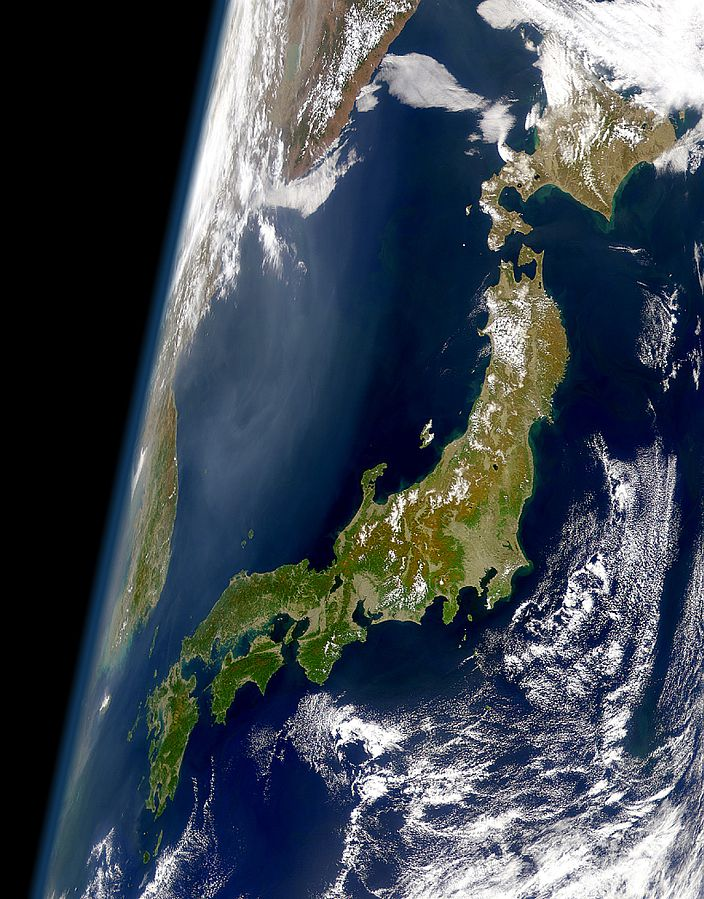
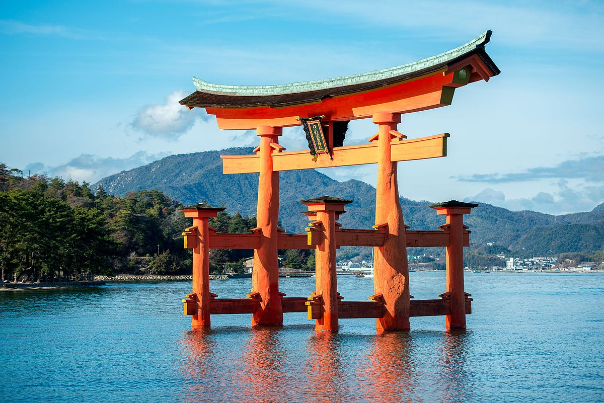

Japan (Japanese: 日本, Nippon [ɲippoꜜɴ] (About this soundlisten) or Nihon [ɲihoꜜɴ] (About this soundlisten); formally 日本国, About this soundNippon-koku or Nihon-koku, lit. 'State of Japan') is an island country in East Asia. Located in the Pacific Ocean, it lies off the eastern coast of the Asian continent and stretches from the Sea of Okhotsk in the north to the East China Sea and the Philippine Sea in the south.

The kanji that make up Japan's name mean 'sun origin', and it is often called the "Land of the Rising Sun". Japan is the world's 4th largest island country and encompasses about 6,852 islands. The stratovolcanic archipelago has five main islands: Honshu, Hokkaido, Kyushu, Shikoku and Okinawa which make up about 97% percent of Japan's land area.[15] The country is divided into 47 prefectures and unofficially into eight regions, with Hokkaido being the northernmost prefecture and Okinawa being the southernmost prefecture. Japan is the 2nd most populous island country. The population of approximately 126 million is the world's eleventh largest, of which 98.5% are ethnic Japanese. 90.7% of people live in cities, while 9.3% live in the countryside.[16] About 13.8 million people live in Tokyo,[17] the capital of Japan. The Greater Tokyo Area is the most populous metropolitan area in the world with over 38 million people
From the 12th century until 1868, Japan was ruled in the name of the Emperor by successive feudal military shōguns. Japan entered into a long period of isolation in the early 17th century, which was ended in 1853 when a United States fleet pressured Japan to open to the West. After nearly two decades of internal conflict and insurrection, the Imperial Court regained its political power in 1868 through the help of several clans from Chōshū and Satsuma – and the Empire of Japan was established. In the late 19th and early 20th centuries, victories in the First Sino-Japanese War, the Russo-Japanese War and World War I allowed Japan to expand its empire during a period of increasing militarism. The Second Sino-Japanese War of 1937 expanded into part of World War II in 1941, which came to an end in 1945 following the Japanese surrender. Since adopting its revised constitution on May 3, 1947, during the occupation led by SCAP, the sovereign state of Japan has maintained a unitary parliamentary constitutional monarchy with an Emperor and an elected legislature called the National Diet

Japan is a member of the ASEAN Plus mechanism, UN, the OECD, the G7, the G8, and the G20, and is considered a great power.[19][20][21] Its economy is the world's third-largest by nominal GDP and the fourth-largest by purchasing power parity. It is also the world's fourth-largest exporter and fourth-largest importer.
Japan benefits from a highly skilled and educated workforce; it has among the world's largest proportion of citizens holding a tertiary education degree.[22] Although it has officially renounced its right to declare war, Japan maintains a modern military with the world's eighth-largest military budget,[23] used for self-defense and peacekeeping roles; it ranked as the world's fourth-most powerful military in 2015.[24] Japan is a highly developed country with a very high standard of living and Human Development Index. Its population enjoys one of the highest life expectancy and the third lowest infant mortality rate in the world[25][26], but is experiencing issues due to an aging population and low birthrate. As of 2019, Japanese citizens had visa-free or visa-on-arrival access to 189 countries and territories, ranking the Japanese passport 1st in the world, tied with Singapore.